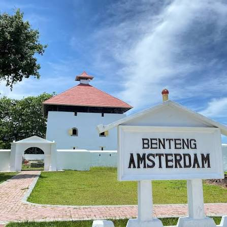
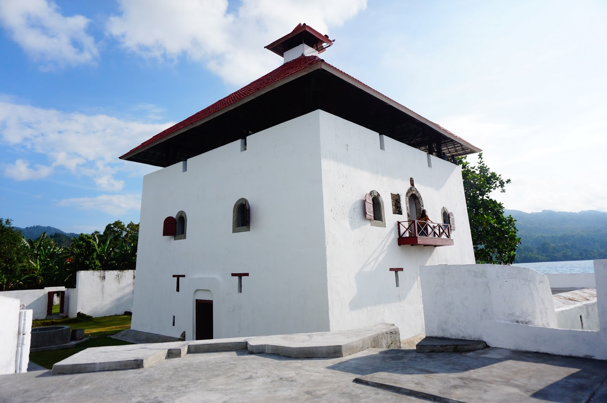

Historis
Walaupun Benteng ini bernama Amsterdam, namun sebenarnya situs ini merupakan bangunan yang dibangun oleh tentara Portugis sejak tahun 1512. Pada masa itu, Benteng Amsterdam hanyalah sebuah Loji atau Gudang Penyimpanan hasil bumi seperti cengkeh atau pala yang merupakan objek monopoli perdagangan dan kekuasaan Bangsa Portugis di Tanah Ambon. Nama Amsterdam didapat ketika kekuasaan Portugis berakhir dan beralih kepada perusahaan dagang Belanda VOC yang juga berambisi menguasai perdagangan rempah-rempah dari Maluku sejak tahun 1605. Benteng ini resmi bernama Amsterdam tepatnya pada tahun 1649, ketika pemugarannya sempurna diselesaikan oleh salah seorang Gubernur Jenderal Belanda yang bernama Arnold de Vlaming van Ouds Hoorn. Bangunan ini pun resmi beralih dari hanya gudang penyimpanan menjadi sebuah benteng pertahanan Belanda.
Bangunan utama Benteng Amsterdam berbentuk seperti rumah, itu sebabnya pada masa lalu VOC menyebut bangunan ini sebagai blok huis (rumah dalam bahasa Belanda). Bangunan ini berlatai 3 dan memiliki fungsi yang berbeda. Lantai 1 yang paling bawah adalah tempat tinggal bagi para serdadu termasuk gudang senjata, lantai 2 diperuntukan bagi para perwira dan lantai 3 yang paling atas adalah menara pengintai. Bangunan utama dikelilingi pagar yang dilengkapi beberapa menara jaga dan menghadap langsung ke lautan. Konon, ketika benteng ini dikuasai oleh VOC, benteng ini menjadi kubu pertahanan Belanda dari pemberontakan masyarakat lokal yang dipimpin oleh seorang Kapitan Kakialy.
Galeri
Berikut adalah beberapa foto yang diambil dari Benteng Amsterdam. Setiap sudutnya memiliki cerita dan nilai historis yang tinggi, menjadikannya salah satu destinasi wisata yang menarik di Ambon.

Gerbang utama dan plang nama Benteng Amsterdam yang menyambut pengunjung di tepi pantai Negeri Hila.

Menara utama bertingkat tiga berarsitektur khas Belanda (Blok Huis) dengan atap merah ikonik dan balkon pemantau.

Tampilan dari atas lanskap komplek benteng, memperlihatkan tembok pertahanan batu (rampart) dan sumur tua peninggalan sejarah.
Aktifitas Yang Dapat Pengunjung Lakukan
Saat mengunjungi Benteng Amsterdam, pengunjung dapat menikmati berbagai aktivitas menarik. Anda dapat menjelajahi setiap sudut benteng, mempelajari sejarahnya melalui pameran yang ada, dan menikmati pemandangan laut yang menakjubkan.
- Menjelajahi Setiap Sudut Benteng
- Melihat Pemandangan Laut dari Menara
- Belajar Sejarah melalui Pameran


Lokasi & Aksesbilitas
Benteng Amsterdam terletak di Desa Hila, Kecamatan Leihitu, Kabupaten Maluku Tengah. Berjarak sekitar 42 km dari pusat Kota Ambon, lokasi ini dapat dijangkau dalam waktu kurang lebih 1 jam perjalanan darat. Benteng ini berdiri tepat di tepi pantai pesisir utara Pulau Ambon menghadap ke laut lepas
- Alamat: Negeri Hila, Kecamatan Leihitu, Kabupaten Maluku Tengah
- Waktu Tempuh: Kurang lebih 60 menit dari Kota Ambon
- Transportasi: Kendaraan pribadi/Transportasi umum
Peta Lokasi
Tabel Informasi
| Informasi Utama | Detail keterangan |
|---|---|
| Nama Destinasi | Benteng Amsterdam |
| Kategori Wisata | Sejarah dan Budaya |
| Jam Kunjungan | 08:00 - 17:00 WIT Setiap hari |
| Kunjungan ke Area Dalam Benteng | Terbuka untuk umum saat jam operasional |
| Tiket Masuk | Gratis, pengunjung hanya perlu mengisi buku tamu |
| Fasilitas |
|